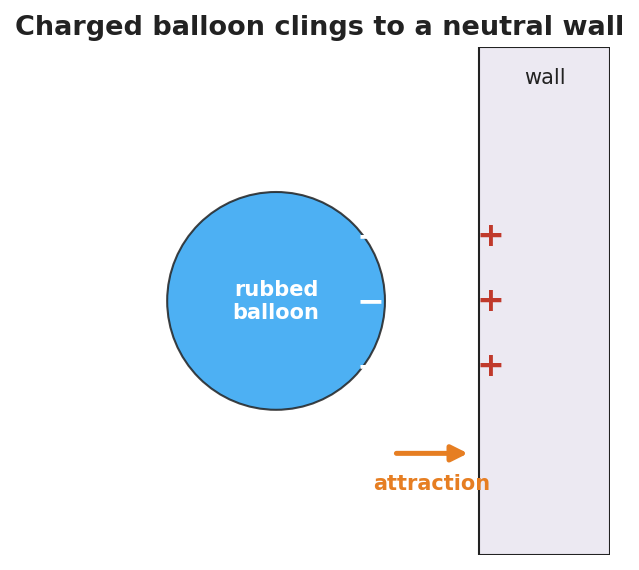

Unit: Electrostatics — Lesson 01: Electric Charge
Phenomenon
Your teacher rubs a balloon on their hair and presses it to the wall — and it sticks, with no glue. Held near your head, the balloon makes strands of hair rise toward it. Small bits of paper leap up to meet it.

Driving Question
What invisible change does rubbing make, and why does it cause objects to pull together or push apart?
Notice & Wonder
Watch the balloon, the wall, and the hair. Write what you notice and what you wonder.
Initial Model
Draw the rubbed balloon next to the wall. Show what you think moved (and which way) when the balloon was rubbed. Then predict: will the balloon stick to a second rubbed balloon, or push it away?
Investigate
Each circle below is a charged object. Click a charge to flip its sign between + and −. Watch the arrows: like charges repel (push apart), unlike charges attract (pull together).
Charge A: + · Charge B: − · Result: attract
Click either charge to flip its sign.
Make It Make Sense
- Two balloons are each rubbed on the same wool sweater, then brought close. Do they attract or repel? How do you know?
- A balloon is rubbed and gains a negative charge. Where did that charge come from, and what sign is the object it was rubbed on?
- A neutral scrap of paper is pulled toward a charged balloon. Was the paper given a charge, or is something else going on?
Stuck? Sentence frame
"The two objects ___ (attracted / repelled) because they have ___ (the same / opposite) charge."
Key Vocabulary (max 3)
- electric charge — a basic property of matter that causes electric forces; it comes in two kinds (positive and negative) and only in whole multiples of e = 1.6 × 10⁻¹⁹ C
- positive charge — the kind of charge carried by protons; two positives repel
- negative charge — the kind of charge carried by electrons; a positive and a negative attract
Revise Your Model
Return to your Initial Model. Re-label what moved using electric charge and positive/negative. Rewrite your explanation of why the balloon sticks, using the idea that charge is conserved — only moved, never made.
Return to the Phenomenon
Why do you get a shock at a metal doorknob after walking across carpet? Predict in one sentence using the word charge, then check: walking rubbed extra electrons onto you, and touching the metal lets that built-up charge jump across as a spark.
Exit Ticket + Closing Reflection
- Two small spheres hang side by side.
(a) When both are rubbed with the same cloth, they swing apart. What does that tell you about their charges?
(b) A third sphere is brought near and the first swings toward it. What sign is the third sphere?
(c) A balloon gains a charge of −8 units after being rubbed on a wool sock. What is the charge on the sock, and why? - Reflection: What is one everyday "shock or cling" moment you now understand differently? Who helped you make sense of it?